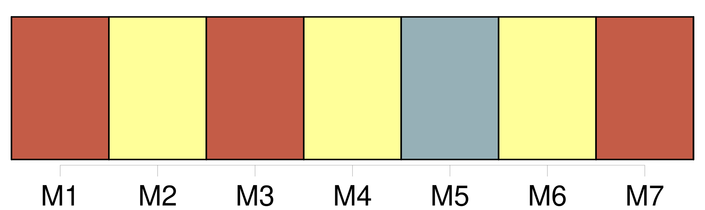

Longueur nb maillons : 8 mentions |
 |
Forts de [leur] expérience sur le terrain, [les policiers] annoncent clairement les objectifs de [leur] action : « Sensibiliser et responsabiliser la jeunesse pour qu'elle puisse agir en connaissance de cause. [2 phrases]
Une fois les objectifs bien cadrés et compris, [les policiers] abordent et [débattent] plus aisément des points essentiels comme : il n'existe pas de drogue douce, la drogue ne résout aucun problème, l'héroïne peut créer un effet de dépendance dès la première prise, il faut des années pour s'en sortir, la drogue est un danger pour la santé, toute drogue est interdite par la loi. Enfin, [les policiers] attirent l'attention sur les effets de la drogue au niveau du comportement et de la délinquance. Là aussi, [leur] expérience permet de confirmer l'incompatibilité de la drogue avec le monde du travail ou celui de la conduite d'un véhicule, à cause du manque de discernement, d'attention et d'intérêt général commun à tous les toxicomanes.
Tout comme pour la dépendance, [les policiers] le constatent aussi à Commercy, les besoins conduisent à des drames familiaux, des vols à l'arrachée, la prostitution, des braquages, voire des meurtres. |
|
Il est possible de télécharger la ressource sur la page Ortolang |
Si vous avez des questions ou vous voyez des erreurs, merci d'envoyer un mail à silvia.federzoni89@gmail.com |